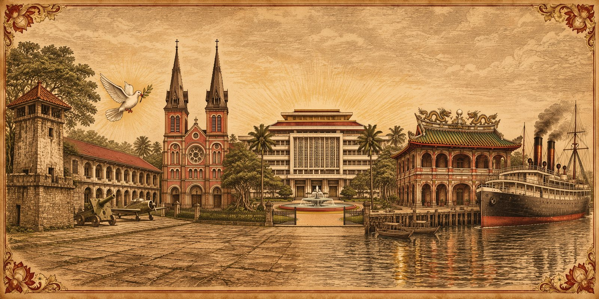

📌 Cách làm bài: Trắc nghiệm — bấm chọn đáp án, máy báo đúng/sai ngay. Điền khuyết — gõ đáp án rồi bấm Kiểm tra (máy chấp nhận cách viết tương đương, ví dụ “da cam” hay “chất độc da cam”). Nối cột — chọn chữ cái a–e cho từng mục ở cột A.

Khám phá 5 di tích lịch sử — tham quan ảo, làm bài trực tiếp trên web và chấm điểm ngay.
Mỗi di tích có 15 câu: 5 trắc nghiệm · 5 điền khuyết nâng cao · 5 câu nối cột.